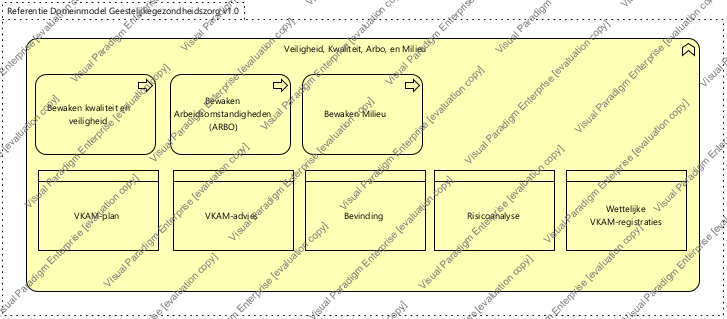

|
|
|
Generieke architectuur : Model . Architectuur : Package . Business architectuur : Package . Geestelijke gezondheidszorg : Package . Zorgprocessen - Geestelijke gezondheidszorg : Package
 ArchiMate Diagram - Bedrijfsondersteuning - Veiligheid, Kwaliteit, Arbo, en Milieu (GGz))
ArchiMate Diagram - Bedrijfsondersteuning - Veiligheid, Kwaliteit, Arbo, en Milieu (GGz))
 link
link
| Jump to: |
|  |
| Activiteiten met betrekking tot het bewaken en optimaliseren van Veiligheid, kwaliteit, arbeidsomstandigheden en milieuaspecten binnen de organisatie. |